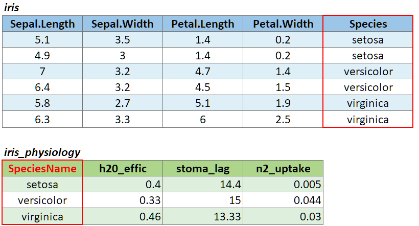

Spatial Data Analysis with R
Society for Conservation GIS, July 2020
Welcome and Part 1 Review 
Welcome and Part 1 Review
Basic vectors are unnamed, meaning the individual elements don’t have names:
## [1] 1 2 3 4 5Elements of vectors can have names however, if you create them with the c() function:
## girth height depth
## 54 98 30Unfortunately, just because a vector has named elements doesn’t mean you can extract elements by name (unlike a list object). This would not work:
So why would anyone want to create a named vector?
Occassionaly you see function arguments that want a named vector. For example suppose you want to join the following two tables with dplyr::left_join():

This can be easily accomplished with:
But what if the join columm is named differently in each table?

left_join() has a way to handle this, provided you pass a named vector as the by argument:
tmap Choropleth MapChoropleth maps use different colors and symbol properties to display feature attributes.
While you can make choropleth maps in base R, it’s a lot easier to use tmap, ggplot2, or other packages.
## Load the counties
epsg_caalbers <- 3310
ca_cnty_alb <- st_read("./data/ca_counties.geojson") %>% st_transform(epsg_caalbers)
glimpse(ca_cnty_alb)## Reading layer `ca_counties' from data source `D:\Workshops\R-Spatial\rspatial_mod\outputs\rspatial_data\data\ca_counties.geojson' using driver `GeoJSON'
## Simple feature collection with 58 features and 13 fields
## geometry type: MULTIPOLYGON
## dimension: XYZ
## bbox: xmin: -124.4096 ymin: 32.53416 xmax: -114.1312 ymax: 42.00952
## z_range: zmin: 0 zmax: 0
## geographic CRS: WGS 84
## Rows: 58
## Columns: 14
## $ STATEFP <chr> "06", "06", "06", "06", "06", "06", "06", "06", "06", "06", "06", "06", "06", "06", "06...
## $ COUNTYFP <chr> "099", "075", "005", "071", "091", "093", "063", "079", "049", "011", "013", "111", "05...
## $ LSAD <chr> "22", "22", "22", "22", "22", "22", "22", "22", "22", "22", "22", "22", "22", "22", "22...
## $ ALAND <dbl> 3870792979, 121451664, 1539947591, 51947497395, 2468686345, 16259635719, 6612371925, 85...
## $ AWATER <dbl> 51176484, 479139414, 29470575, 123929658, 23299112, 179864658, 156389419, 820409436, 74...
## $ CountyFIPS <chr> "06099", "06075", "06005", "06071", "06091", "06093", "06063", "06079", "06049", "06011...
## $ CountyNAME <chr> "Stanislaus County", "San Francisco County", "Amador County", "San Bernardino County", ...
## $ POP2010 <dbl> 515283, 805825, 37860, 2041689, 3221, 44971, 19918, 269860, 9708, 21459, 1052894, 82535...
## $ POP2011 <dbl> 518270, 816239, 37520, 2064663, 3104, 44719, 19690, 271165, 9499, 21415, 1066587, 83097...
## $ POP2012 <dbl> 522134, 829691, 37072, 2080651, 3076, 44214, 19341, 274528, 9332, 21397, 1079358, 83547...
## $ POP2013 <dbl> 526286, 841138, 36602, 2093306, 3040, 43773, 18877, 276284, 9112, 21432, 1095980, 84097...
## $ POP2014 <dbl> 531997, 852469, 36742, 2112619, 3003, 43628, 18606, 279083, 9023, 21419, 1111339, 84617...
## $ SQMI <dbl> 1494.52, 46.89, 594.58, 20057.04, 953.17, 6277.88, 2553.05, 3298.75, 3915.40, 1150.73, ...
## $ geometry <MULTIPOLYGON [m]> MULTIPOLYGON Z (((-131297 -..., MULTIPOLYGON Z (((-205081.3..., MULTIPOLYG...mymap <- tm_shape(ca_cnty_alb) +
tm_polygons (col = "POP2014", ## col: the column that contains the values
n = 10, ## n: number of bins
style = "cont", ## style: method to create the bins
palette = "YlOrRd", ## palette: a named palette or a vector of colors
colorNA = "grey50", ## colorNA: the color to use for NA values
legend.format = list(big.num.abbr = NA), ## legend options
legend.reverse = FALSE , ## legend.reverse: reverse the legend
title = "2014 Population" ## title: title of the legend element
) +
tm_layout(legend.position = c("right", "top")) +
tm_scale_bar(position = c("left", "bottom"))
mymap
Arguments that define the choropleth generally go in the function that displays the features (e.g., tm_symbols(), tm_polygons(), tm_fill(), tm_borders())
Common arguments include:
col - (stands for column, not color) the column that has the values
palette - named palette (to see a list of named palettes, run RColorBrewer::brewer.pal.info), or a vector of colors
n - number of ‘bins’ to create
style - how the ‘bins’ should be constructed:
discrete options: “cat”, “fixed”, “sd”, “equal”, “pretty”, “quantile”, “kmeans”, “hclust”, “bclust”, “fisher”, “jenks”, and “log10_pretty”`
continuous options: “cont”, “order”, “log10”
breaks - specific break points (when style = 'fixed')
Make a map of the 2014 population density per county (i.e., population / square mile). Use a monochromatic color ramp (e.g., ‘Purples’). Hint
Create the column first using dplyr::mutate()
Because California’s population at the county level is so skewed (thanks LA!), consider using the ‘log10’ style to scale the values logarithmically.
Solution
## Compute the pouplation per square mile
ca_cnty_alb <- ca_cnty_alb %>% mutate(pop_density_2014 = POP2014 / SQMI)
summary(ca_cnty_alb$pop_density_2014)
##3 Create the map definition
mymap <- tm_shape(ca_cnty_alb) +
tm_polygons (col = "pop_density_2014", ## col: the column that contains the values
n = 10, ## n: number of bins
style = "log10", ## style: method to create the bins
palette = "Purples", ## palette: a named palette or a vector of colors
colorNA = "grey50", ## colorNA: the color to use for NA values
legend.format = list(big.num.abbr = NA), ## legend options
legend.reverse = TRUE , ## legend.reverse: reverse the legend
title = "2014 Population Density" ## title: title of the legend element
) +
tm_layout(legend.position = c("right", "top")) +
tm_scale_bar(position = c("left", "bottom"))
mymap
## Min. 1st Qu. Median Mean 3rd Qu. Max.
## 1.512 25.555 107.375 696.709 347.779 18180.188